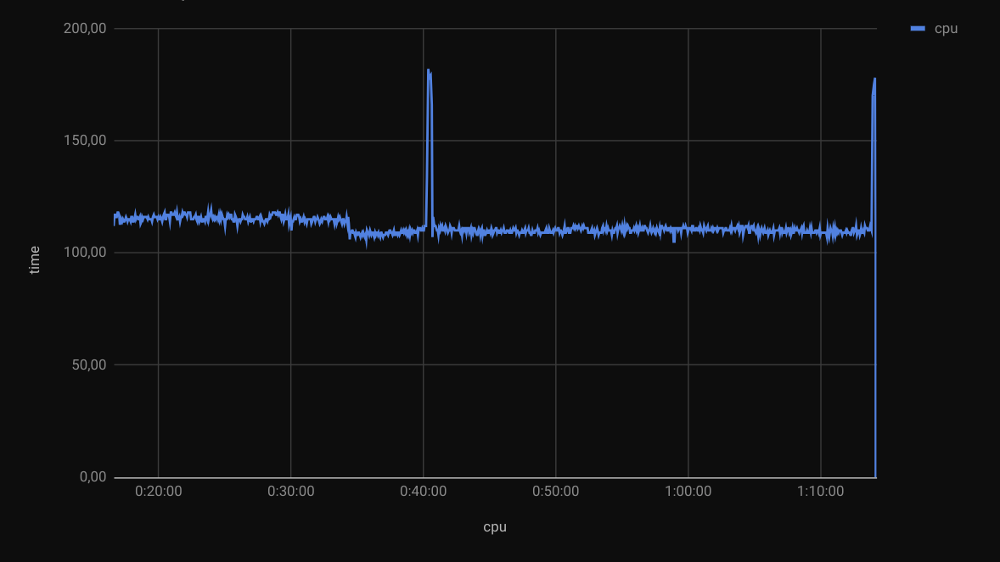
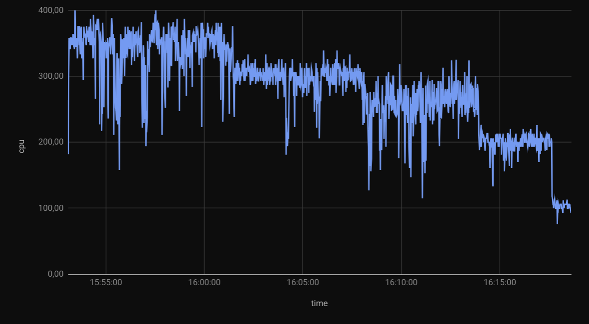

Detailed system and process monitoring
Never got the hang of telegraf, it was all too easy to cook my own monitoring...
Humble Beginnings
In fact, when I started building detailed process monitoring I knew nothing about telegraf, influxdb, grafana or even Raspberry Pi computers.
It was back in 2017, when pondering whether to build my next PC around an Intel Core i7-6950X or an AMD Ryzen 5 1600X, that I started looking into measuring CPU usage of a specific process. I wanted to better see and understand whether more (but slower) CPU cores would be a better investment than faster (but fewer) CPU cores.
At the time my PC had a
AMD Phenom II X4 965 BE C3
with 4 cores at 3.4GHz, and I had no idea how often those CPU
cores were all used to their full extent. To learn more about
the possibilities (and limitations) of fully
multi-threading CPU-bound applicatios, I started running
top commands in a loop and dumping lines in .csv files to
then plot charts in Google Sheets. This was very crude, but
it did show the difference between rendering a video in
Blender (not multi-threaded) compared to using the
pulverize tool to
fully multi-thread the same task:


This early ad-hoc effort resulted in a few scripts to measure per-proccess CPU usage, overall CPU with thermals, and even GPU usage.
mt-top
This script measures only CPU usage for a single process:
#!/bin/bash
#
# CPU usage stats across all threads / instances for a process.
#
# Given a process name (as it appears when running the "top" command),
# use the "top" command to capture aggregate CPU usage for all threads
# of that process every second.
#
# If that process is not yet running, wait until it does. Keep tracking
# CPU usage until that process ends, or Ctrl-C is pressed.
#
# Usage: mt-top blender
if test "$#" != 1
then
echo "Usage: $0 <process name>"
exit 1
fi
pname=$1
pstarted=0
echo -e "time\tcpu"
while true
do
time=$(date +"%H:%M:%S")
cpu=$(top -b -n 1 | egrep -i "$pname" | sort -n -k1 -t\ | awk '{print $9}' | tr '\n' '+' | sed 's/+$/\n/' | bc -ql)
if [ -n "$cpu" ]
then
echo -e "$time\t$cpu"
if [[ $pstarted == 0 ]]
then
pstarted=1
fi
else
if [[ $pstarted == 1 ]]
then
# Process has finished.
exit 0
fi
fi
sleep 1
done
mt-top-temp
This measures the overall CPU usage along with thermals:
#!/bin/bash
#
# CPU usage % and temperature, sampled every second.
#
# Usage: mt-top-temp ... Ctrl+C
echo -e "time\tcpu\ttemp"
while true
do
time=$(date +"%H:%M:%S")
cpu=$(top -b -n 1 |awk '{print $9}' | egrep '[0-9]\.[0-9]|^[0-9][0-9]$|^[0-9][0-9][0-9]$|^[0-9][0-9][0-9][0-9]$' | tr '\n' '+' | sed 's/+$/\n/' | bc -ql)
temp=$(sensors -A | grep temp1 | awk '{print $2}')
echo -e "$time\t$cpu\t$temp"
sleep 1
done
mt-top-gpu
This script measures (overall) GPU usage:
#!/bin/bash
#
# GPU usage % and temperature, sampled every second.
#
# Usage: mt-top-gpu ... Ctrl+C
echo -e "time\tcpu"
while true
do
time=$(date +"%H:%M:%S")
gpu=$(nvidia-smi -i 0 --query-gpu=temperature.gpu,utilization.gpu --format=csv,noheader)
echo -e "$time\t$gpu"
sleep 1
done
Enter InfluxDB & Grafana
A few days ago someone shared a screenshot of their good-looking weather monitoring and mentioned two things I had never seen before: influxdb and grafana. They also mentioned they were running their monitoring on a Raspberry Pi computer.
Now I know what those are, I have a Raspberry Pi 3 model B with CUPS to share the printer over WiFi; much cheaper than even the cheapest WiFi-enabled printers.
InfluxDB
Installing InfluxDB couldn't be easier, if you don't mind running a fairly old version:
# apt install influxdb influxdb-client -y
# dpkg -l influxdb | grep influxdb
ii influxdb 1.6.4-1+deb10u1 armhf Scalable datastore for metrics, events, and real-time analytics
For a more recent version, one can install InfluxDB OSS 1.7 or InfluxDB 2.7.
Once installed, one or more databases need to be crated to
start collecting data.
Get started with InfluxDB OSS
to create a database (e.g. monitoring) and set a
retention policy:
# influx
Connected to http://localhost:8086 version 1.6.7~rc0
InfluxDB shell version: 1.6.7~rc0
> CREATE DATABASE monitoring
> CREATE RETENTION POLICY "30_days" ON "monitoring" DURATION 30d REPLICATION 1
> ALTER RETENTION POLICY "30_days" on "monitoring" DURATION 30d REPLICATION 1 DEFAULT
As soon as the database is created, data can be inserted. There is no need to define columns, instead just Write data with the InfluxDB API to feed simple data such as CPU load and temperature:
curl -i -XPOST \
--data-binary "cpu,host=$host value=$cpu" \
'http://localhost:8086/write?db=monitoring'
curl -i -XPOST \
--data-binary "temperature,host=$host value=$temp" \
'http://localhost:8086/write?db=monitoring'
The body of the POST or InfluxDB line protocol contains the time series data that you want to store. Data includes:
- Measurement (required): the thing to measure, e.g.
cpuin this case to measure global CPU load. - Tags: Strictly speaking, tags are optional but most series include tags to differentiate data sources and to make querying both easy and efficient. Both tag keys and tag values are strings.
- Fields (required): Field keys are required and are always strings, and, by default, field values are floats.
- Timestamp: Supplied at the end of the line in Unix time in nanoseconds since January 1, 1970 UTC - is optional. If you do not specify a timestamp, InfluxDB uses the server’s local nanosecond timestamp in Unix epoch. Time in InfluxDB is in UTC format by default.
Minimal update to post to InfluxDB
The scripts above can now feed data to it in addition to
producing TSV files, e.g. mt-top-temp
can be updated as follows:
#!/bin/bash
#
# CPU usage % and temperature, sampled every second.
#
# Usage: mt-top-temp ... Ctrl+C
echo -e "time\tcpu\ttemp"
while true
do
time=$(date +"%H:%M:%S")
cpu=$(top -b -n 1 |awk '{print $9}' | egrep '[0-9]\.[0-9]|^[0-9][0-9]$|^[0-9][0-9][0-9]$|^[0-9][0-9][0-9][0-9]$' | tr '\n' '+' | sed 's/+$/\n/' | bc -ql)
temp=$(sensors -A | grep temp1 | awk '{print $2}' | egrep -o '[0-9]+\.[0-9]')
host=$(hostname)
curl -i -XPOST \
--data-binary "cpu,host=$host value=$cpu" \
'http://localhost:8086/write?db=monitoring' \
2>&1 > /dev/null
curl -i -XPOST \
--data-binary "temperature,host=$host value=$temp" \
'http://localhost:8086/write?db=monitoring'
2>&1 > /dev/null
echo -e "$time\t$cpu\t$temp"
sleep 1
done
Grafana
The next step is visualizing these time series in fancy charts, and that's where Grafana comes in.
Install Grafana OSS,
start the server with systemd
and reset the Admin password:
# echo "deb https://packages.grafana.com/oss/deb stable main" \
| tee /etc/apt/sources.list.d/grafana.list
# curl https://packages.grafana.com/gpg.key | sudo apt-key add -
# apt update
# apt install grafana
# systemctl daemon-reload
# systemctl start grafana-server
# grafana-cli admin reset-admin-password \
PLEASE_CHOOSE_A_SENSIBLE_PASSWORD
INFO[03-20|15:02:11] Connecting to DB logger=sqlstore dbtype=sqlite3
INFO[03-20|15:02:11] Starting DB migrations logger=migrator
Admin password changed successfully ✔
At this point Grafana is available on http://localhost:3000/ for the Admin user.
Add your InfluxDB data source to Grafana,
create a new Dashboard and Add > Visualization for each
measurement (cpu, temp, gpu, etc.).
Tweak /etc/grafana/grafana.ini as follows to enable
anonymous authentication
and allow anonymous users to view dashboards in the default org:
#################################### Anonymous Auth ######################
[auth.anonymous]
# enable anonymous access
enabled = true
# specify organization name that should be used for unauthenticated users
org_name = Main Org.
# specify role for unauthenticated users
org_role = Viewer
# systemctl restart grafana-server.service
Continuous Monitoring
With InfluxDB and Grafana in place, collection and reporting of metrics can be done continuously, rather than having to run the scripts each time.
For a minimal start, create a script that reports total CPU
usage every second, e.g as /usr/local/bin/conmon
#!/bin/bash
#
# Export system monitoring metrics to influxdb.
# InfluxDB target.
DBNAME=monitoring
TARGET='http://localhost:8086'
# Data file for batch POST.
DDIR="/dev/shm/$$"
DATA="${DDIR}/DATA.txt"
mkdir -p "${DDIR}"
host=$(hostname)
timestamp_ns() {
date +'%s%N'
}
store_line() {
# Write a line of data to the temporary in-memory file.
# Exit immediately if this fails.
echo $1 >>"${DATA}" || exit 1
}
report_top() {
# Stats from top: CPU (overall and per process) and RAM (per process).
ts=$(timestamp_ns)
cpu_load=$(top -b -n 1 |awk '{print $9}' | egrep '[0-9]\.[0-9]|^[0-9][0-9]$|^[0-9][0-9][0-9]$|^[0-9][0-9][0-9][0-9]$' | tr '\n' '+' | sed 's/+$/\n/' | bc -ql)
store_line "top,host=${host} value=${cpu_load} ${ts}"
}
post_lines_to_influxdb() {
# POST data to InfluxDB in batch, when target is available.
# Depends on: nc.
sleep ${DELAY_POST}
host_and_port=$(echo "${TARGET}" | sed 's/.*\///' | tr : ' ')
if nc 2>&1 -zv ${host_and_port} | grep -q succeeded; then
# All other tasks write data to the file in append mode (>>).
# This task reads everything at once and immediately deletes the file.
# This makes all the other tasks write to the same file, created anew.
mv -f "${DATA}" "${DATA}.POST"
cut -f1 -d, "${DATA}.POST" | sort | uniq -c
curl >/dev/null 2>/dev/null -i -XPOST "${TARGET}/write?db=${DBNAME}" --data-binary @"${DATA}.POST"
fi
}
# Run all the above tasks in a loop.
# Each task is responsible of its own checks.
while true; do
report_top
post_lines_to_influxdb
done
Create a new service to run this upon reboot, e.g. as
/etc/systemd/system/conmon.service
[Unit]
Description=Continuous Monitoring
After=influxd.service
Wants=influxd.service
[Service]
ExecStart=/usr/local/bin/conmon
Restart=on-failure
StandardOutput=null
User=root
[Install]
WantedBy=multi-user.target
Then load and start the new service
# systemctl daemon-reload
# systemctl enable conmon.service
Created symlink /etc/systemd/system/multi-user.target.wants/conmon.service → /etc/systemd/system/conmon.service.
# systemctl start conmon.service
From here on, new functions can be added to the conmon
script to collect additional metrics, which will be then
posted by the script periodically. Many other metrics can
be added later, here are some ideas:
- Total RAM usage
- CPU usage per process
- RAM usage per process
- Network I/O per interface
- Disk I/O per disk
- Disk I/O per process
- Disk used/free (per partition)
- GPU load, VRAM, temperature, fan speed, power draw
These and more may be added later, keep an eye on the full scripts in the Continuous Monitoring page.